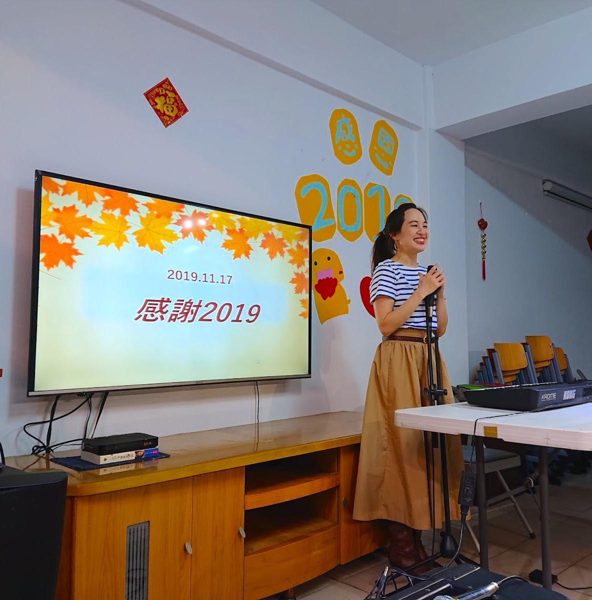
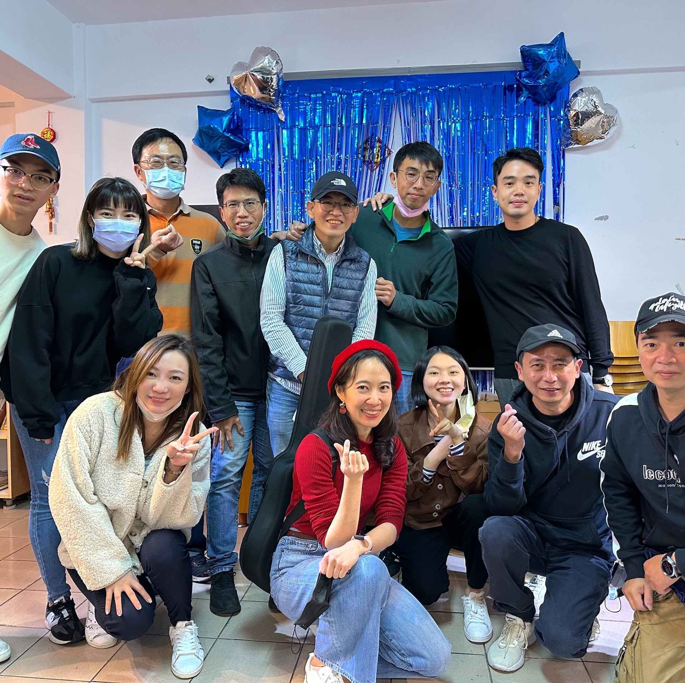

關愛之家-社會邊緣患者的支持
03-03-2023


關愛之家的起源
1986年，關愛之家創辦人楊捷（婕妤）女士，開始照顧她認識的第一位感染者——一位美術系畢業的年輕人。在醫院探視、照顧期間，楊捷更陸續接觸到其他病友，他們因家人無法諒解或失去工作，生活在歧視和排斥中。當年也才三十幾歲的「楊姐」，對這些陌生的朋友也伸出了援手。她常把病友接到自己家中休養。隨著收容人數的增加，後來更另外租賃公寓，讓感染者擁有一個養病和互助生活，也互相砥礪的「中途之家」。
我們與關愛之家的聯繫
2013年，教會中一群渴望帶出祝福的弟兄姊妹，開始了第一次與關愛之家的連結，走入這群隱居在山腰的住民之中。起初並未受到機構住民的歡迎，然而，在一次次弟兄姊妹堅持去陪伴、關心之後，他們漸漸打開心房，相信弟兄姊妹是真心地付出，便願意建立關係。於是，雙方成了好朋友，彼此關心、彼此想念，每次碰面都是熱切期待。
服務的形式
關懷的形式上，最初只有陪伴、團康，以及簡單表演，後來暖心歌手述忱的加入，把一首首溫暖又安慰的音樂帶入住民的心裡，他們會大聲唱詩歌，一起隨著音樂舞動，也願意在弟兄姊妹的陪伴下一起禱告。此外，還陸陸續續有志工朋友加入我們，同心來付出。看見笑容在住民們臉上綻放，是志工們心裡最大的滿足。
神能將各樣的恩惠多多的加給你們，使你們凡事常常充足，能多行各樣善事。如經上所記：他施捨錢財，賙濟貧窮；他的仁義存到永遠。(林後九8-9)